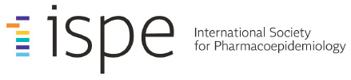

Prototype — In Development

Strategic Plan Progress Tracker
2024-2029 | As of
February 2026
Admin Control Panel
Expand All
Collapse All
Save
Export JSON
Import JSON
Change Log
Publish
Status Overview
Filter Strategic Efforts
All
Not Started
On Track
Delayed
Completed
Changed
Update Date:
×
Change Log
Changes since last save